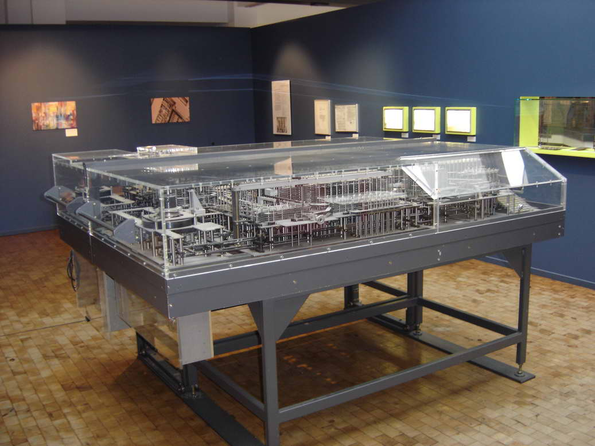
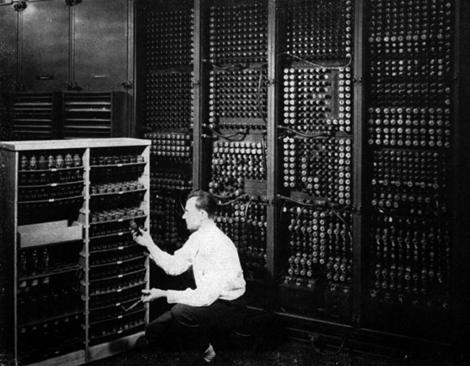
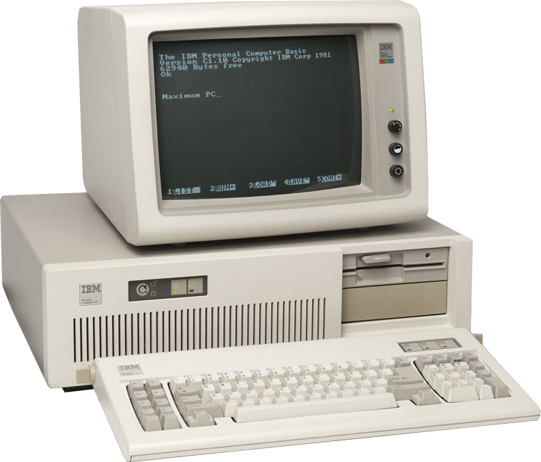

A Historical View of Computing
 From the first digital computer to the computers we now know,
From the first digital computer to the computers we now know,
technology and programming has advanced exponentially over the vast amount
of time we’ve known it. Computers date back to the 1800’s and are continuing
to be developed today. Many people such as Bill Gates and Steve Jobs have
helped in the creation of new technology and programs that are even used to
this day. There are thousands of different types and configurations of
computers out there such as gaming computers, laptops, desktops, tablets, and
more. The 20th century is when computing really took off and led the way to
new software and computers that run and process information a lot faster than
they did before.

First off, the 19th century’s technological advancements played a huge role
in what the 20th century would later put out. Inventions like the Model K,
the Complex Number Calculator, and many more basic inventions have been the
base of what we’ve come to develop over time. Everything started with a simple
idea, and that idea developed into some sort of creation, which then led to
the production of those creations and formed new ideas for more creations.
Programs and software developed that allowed faster and more efficient computers
to then be made. It hasn’t stopped either. Basic computer languages like HTML,
CSS, and Java, to desktops, laptops, and tablets; technology and computing is
advancing dramatically right before our eyes.

To continue, the first programmable computer was called Z1. It was created by a
German man named Konrad Zuse between 1936 and 1938 right in his parent’s living
room! The computer was considered to be, “the first electro-mechanical binary
programmable computer, and the first really functional modern computer”
(Computer Hope). Z1 had initiated the beginning of programming in computers.
The first electronic computer was called the ENIAC, “Short for Electronic Numerical
Integrator And Calculator” (Computer Hope). The ENIAC was used for general use,
such as calculations, and was created by J. Presper Eckert and John Mauchly. The
computer was created at the, “University of Pennsylvania in an effort to calculate
artillery firing tables for the United States Army's Ballistic Research Laboratory”
(Computer Hope). The size of the ENIAC was massive and it took about 3 years just
to build it. It used 200 kilowatts of electricity and was, “1,800 square feet, used
17,468 vacuum tubes, 15,000 relays, weighed almost 50 tons, and cost about $500,000”
(Computer Hope). That’s about the size of an entire room. The EDSAC is another amazing
machine known as the first stored program electronic computer. It created the first
graphical computer game and was nicknamed, “Baby”. These are only a few of the first
computers that began the uprise of technology. the rise of personal computers began
in 1981 when Philip Don Estridge led the development of the original IBM Personal
Computer. It was code named Acorn, “The computer was code named and still sometimes
referred to as the Acorn and had [an] 8088 processor, 16 KB of memory, which was
expandable to 256 and utilized [Microsoft Disk Operating System]” (Computer Hope).
This led to the development of PC clones such as the Compaq Portable, which was
released in 1983 by Compaq. The Compaq Portable was compatible with any IBM computers
and had the ability to use any IBM software used at the time. Going into the 90’s,
Radio Shack developed some of the first multimedia computers, the M2500 XL/2 and M4020
SX. It fused everything into one, “capable of running programs that combine video,
animation, audio, and graphics” (Computer Hope). Heading into the 2000’s, computers
start to look a lot like the ones we now know. Programming began to advance along with
these computers, and they grew faster and more complex through the years.

Lastly, the rise of personal computers began in 1981 when Philip Don Estridge led the
development of the original IBM Personal Computer. It was code named Acorn, “The computer
was code named and still sometimes referred to as the Acorn and had a 8088 processor,
16 KB of memory, which was expandable to 256 and utilized [Microsoft Disk Operating System]”
(Computer Hope). This led to the development of PC clones such as the Compaq Portable, which
was released in 1983 by Compaq. The Compaq Portable was compatible with any IBM computers
and had the ability to use any IBM software used at the time. Going into the 90’s, Radio Shack
developed some of the first multimedia computers, the M2500 XL/2 and M4020 SX. It fused
everything into one, “capable of running programs that combine video, animation, audio, and
graphics” (Computer Hope). Heading into the 2000’s, computers start to look a lot like the
ones we now know. Computers are now faster, have more hard drive space, better CPU’s, RAM,
and more!
To conclude, the 20th century is when computing really took off and led the way to new
software and computers that run and process information a lot faster than they did before.
From the Z1 to the MacBook Pro I’m typing on now, computers will continue to advance
throughout my life time and yours.